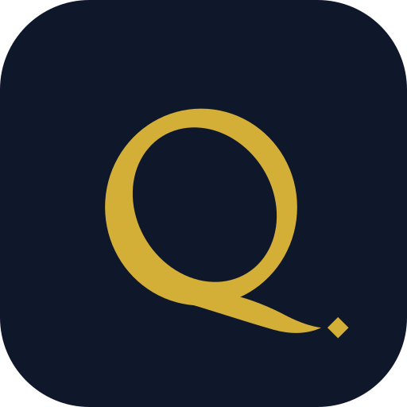

One stroke of the pen
Qalam (قلم · Калам) means "pen" in Arabic, Persian and Uzbek: the instrument of contracts, accounts and knowledge.
Our Q is drawn the way a real qalam writes, with the thick-and-thin contrast of a broad nib. Its tail is a single pen stroke that ends in the nuqta, the diamond-shaped dot calligraphers use as the unit for measuring every letter. The nuqta stands for precision: the measure behind every tax position, audit opinion and structure we deliver.